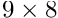

In this tutorial we present an alternative approach to the solution of multi-physics problems, using what we call a "multi-domain" approach. We illustrate the methodology by re-considering the previously-described, two-dimensional Boussinesq convection problem in which an incompressible, Newtonian fluid is heated from below.
The tutorial is quite long but comprises four relatively self-contained parts. Feel free to skip the theory if you want to jump straight in...
- Part I provides an overview of
oomph-lib'soverall framework for setting up multi-domain interactions.
- Part II illustrates the general procedure for the specific example of a Boussinesq convection problem. We demonstrate how to implement a two-way, multi-domain interaction between the Navier-Stokes equations in which the body force is affected by thermal buoyancy effects, and the advection-diffusion equations for the temperature, in which the "wind" is given by fluid velocity.
- Part III discusses the driver code to solve the Boussinesq problem, using the elements developed in Part II.
- Part IV discusses how to optimise multi-domain interactions.
Part I: The overall framework for handling multi-domain interactions
When two or more physical processes interact within the same spatial domain there are three different approaches to setting up the interaction within oomph-lib. One approach is to write a completely new element that discretises all the PDEs involved in the problem. The second approach, described in the tutorials discussing the the non-refineable and refineable solution of the Boussinesq convection problem, is to create a combined multi-physics element using inheritance from two, or more, existing elements. In both these cases, the physical processes and their associated fields interact within a single element and we refer to this methodology as a multi-field approach.
In this tutorial we describe a third approach to multi-physics problems, in which we solve the problem using two different types of elements on two different meshes (domains), each occupying the same physical space. Rather than interacting locally within elements, the different physical processes interact directly between the two domains, so that, in the Boussinesq convection problem considered here, each advection-diffusion element obtains the "wind" from the (separate) Navier-Stokes element that occupies the same position, while the Navier-Stokes elements obtain the temperature required for the computation of the buoyancy force from the corresponding advection-diffusion element.
One benefit of this multi-domain approach, compared to a multi-field approach, is that different error estimators can be used on each domain and there is no longer a need to construct a combined multi-physics error estimator; see the tutorial for the adaptive solution of the Boussinesq convection problem for more details on this issue. Moreover, the meshes do not have to have the same refinement pattern, which can be advantageous if the different physical processes act over different spatial scales. The figure below shows that in the Boussinesq convection problem the Navier–Stokes mesh (panel (a)) requires much more refinement than the advection-diffusion mesh (panel (b)).

The ElementWithExternalElement class
Interaction between different elements in different domains is a fundamental feature of many multi-physics problems and the generic functionality to deal with such interactions is provided by the ElementWithExternalElement class. Any element that requires information from an "external element" should therefore inherit from the base class ElementWithExternalElement.
"External elements" typically provide source-like terms for the ElementWithExternalElement. For instance, in the Boussinesq convection problem studied here, the advection-diffusion element is the "external element" for the Navier-Stokes element because it affects the body force in the Navier-Stokes equations; in a fluid-structure interaction problem, the Navier-Stokes elements that are adjacent to the fluid-loaded elastic wall act as the "external elements" for the FSIWallElement because they determine the traction that the fluid exerts onto the wall; etc.
Within a finite-element context, the effect of the "external element" onto the ElementWithExternalElement typically has to be evaluated at the integration points of the ElementWithExternalElement. Therefore, the ElementWithExternalElement base class provides storage for a pointer to an "external element" (and the local coordinate within it) for each integration point. Access to this information is provided via the member functions
and
For a given integration point, ipt, within the ElementWithExternalElement, these functions identify the corresponding point in the "external element" by returning a pointer to the "external element" and the local coordinate within it, respectively. The unsigned parameter interaction denotes the interaction index, required to allow for cases where an element interacts with more than one "external element". This occurs, for instance, in double-diffusive convection problems (discussed in a separate demo driver code ), in which the body force in the Navier-Stokes equations is affected by two physical properties, e.g. temperature and salinity, both of which are transported by separate advection-diffusion processes; or in FSI problems where a beam or shell element is affected by a fluid load on both its "front" and "back" (see, e.g., the FSI channel with leaflet problem).
Data that affects the fields in the "external elements" must be specified so that the off-diagonal blocks in the ElementWithExternalElement's Jacobian matrix (representing the derivatives of the ElementWithExternalElement's residual vector with respect to the Data in the "external elements") can be calculated. We divide such data into two categories:
- External field data: all
Datathat affects the fields through which the "external element" interacts with theElementWithExternalElement.
- External geometric data: all geometric
Datathat affects the shape and position of the "external element" and, therefore, spatial derivatives of its fields.
The rationale for this division is that in many cases the field data's contribution to the interaction blocks in the Jacobian matrix can be found analytically, whereas the geometric data is more easily handled by finite differencing.
Both types of external data are determined (automatically) by two member functions of the ElementWithExternalElement. The first one,
determines the external field data that affect the (possibly multiple) interactions in the ElementWithExternalElement. Given the vector external_elements_pt (within which external_elements_pt[i] contains the set of pointers to the "external elements" involved in the ElementWithExternalElement's i -th interaction), the function returns a set of pairs, each of which comprises a pointer to a Data object and an unsigned that identifies a value within it. The default implementation of this function includes all field data of all "external elements", using calls to
for each "external element". Similarly, the function
returns the set of all Data that affect the shape or position of any of the "external elements" specified by the vector external_elements_pt. Again, this function has a default implementation that determines all geometric Data associated with "external elements" by calling
for each "external element".
We note that the default implementation of these functions can (and, where possible, should) be overloaded to exclude data values that do not actually contribute to the interaction. For instance, in the Boussinesq convection problem considered here, the advection-diffusion elements are only affected by the velocity degrees of freedom in the Navier-Stokes elements but not by the pressures. Our re-implementation of ElementWithExternalElement::identify_all_field_data_for_external_interaction(...) in the multi-domain advection-diffusion element for the Boussinesq problem therefore excludes the pressure degrees of freedom, see Part IV.
Computation of the Jacobian matrix
Most single-physics elements already provide functions to compute their own Jacobians analytically. These functions compute the derivatives of the element's residual vector with respect to the element's "own" degrees of freedom (e.g. the fluid velocity and pressure in a Navier-Stokes element). The interaction with the "external element" introduces additional dependencies because the element's residual vector now also depends on the unknowns associated with the "external elements". The derivatives of the element's residual vector with respect to these unknowns must therefore be included into the computation of the element's Jacobian matrix.
To maximise code re-use, we follow the approach discussed in the comments section of the single-domain version of the problem and re-use the underlying element's fill_in_contribution_to_jacobian(...) function, while employing finite-differencing to evaluate the derivatives of the element's residual vector with respect to the unknowns associated with the "external elements". This is done most easily by using the function
which computes the derivatives of the element's residual vector with respect to external field and external geometric data by calls to the two functions
and
If, in a particular problem, it is known that the interaction is not affected by the position or shape of the "external elements" ( i.e. if the interaction terms do not involve spatial derivatives of the "external element's" field variables) the unnecessary computation of the derivatives with respect to the "external element's" geometric data may be suppressed using a call to
Depending on the complexity of the interaction terms, it may be worthwhile to provide a function that computes the off-diagonal blocks analytically. This is discussed in more detail in Part IV.
Setting up the interaction
The namespace Multi_domain_functions provides numerous helper functions that facilitate the setup of multi-domain interactions. Specifically, the function Multi_domain_functions::setup_multi_domain_interactions(...) can be used to identify the "external elements" in a two-way interaction between two meshes. The function has the following interface:
Here first_mesh_pt and second_mesh_pt point to the two interacting meshes whose elements (of type ELEMENT_0 and ELEMENT_1, respectively), must be derived from the ElementWithExternalElement class. The optional interaction parameters may be used to specify which interaction is set up in each mesh. If the parameter is not specified it defaults to zero, appropriate if there is only a single interaction.
The function must be called prior to the assignment of the equation numbers, and then again whenever either of the two meshes has changed, e.g. after a mesh adaptation.
Part II: Implementing multi-domain interaction elements for the Boussinesq convection problem
We illustrate the general procedures discussed above by demonstrating how to upgrade existing single-physics Navier-Stokes and advection-diffusion elements to ElementWithExternalElements that can be used for the multi-domain-based solution of the Boussinesq convection problem.
Upgrading the Navier-Stokes element to an ElementWithExternalElement
We use multiple inheritance to upgrade an existing refineable Navier-Stokes element to a RefineableNavierStokesBoussinesqElement in which the temperature that affects the body force is given by an "external" advection-diffusion element. To facilitate code reuse we employ templating to specify the types of the Navier-Stokes and advection diffusion elements.
The constructor calls the constructors of the underlying elements, initialises the pointer to the Rayleigh number (stored as private member data in the class) and sets the number of interactions to one, indicating that the residuals of the Navier-Stokes element are only affected by a single type of "external element" – the advection-diffusion element that determines the temperature distribution.
We provide access functions to the Rayleigh number
and, given that we are dealing with a refineable element, make sure that the pointer to the Rayleigh number is passed to the "son" elements when the element is refined. Furthermore, if the external geometric data could safely be ignored in the "father" elements we assume that the same is true for the "sons":
The most important step is to overload the function that computes the body force in the Navier-Stokes equations so that it depends on the temperature at the ipt -th integration point, as computed by the "external element":
There is only one external interaction so the interaction index is set to zero and the value of the temperature at the integration point is obtained by casting the external element to an advection diffusion element and finding its interpolated field at the appropriate stored local coordinate. Once the temperature has been obtained, the code is identical to that discussed in the tutorial for the corresponding multi-field implementation; in that implementation the temperature could be found from a member function because the interaction is internal to the element.
Finally, we have to compute the element's Jacobian matrix. The easiest (although potentially inefficient) way to do this is to recycle the analytical computation of the derivatives of the Navier-Stokes residuals with respect to the fluid degrees of freedom, as implemented in
NST_ELEMENT::fill_in_contribution_to_jacobian(...),
and then fill in the derivatives with respect to the degrees of freedom associated with the "external elements" by finite differencing:
If this is deemed to be too inefficient, we can provide a function that computes the required entries in the Jacobian analytically:
(The code illustrates both approaches and employs the macro USE_FD_FOR_DERIVATIVES_WRT_EXTERNAL_DATA_IN_MULTI_DOMAIN_BOUSSINESQ to choose which one to use.)
We refer to Part IV for a discussion of how to implement the fully-analytic computation of the Jacobian matrix in the function fill_in_off_diagonal_block_analytic(...).
Upgrading the advection-diffusion element to an ElementWithExternalElement
Upgrading the advection-diffusion element to an ElementWithExternalElement in which the wind is given by the "external" Navier Stokes element follows the same procedure. We use multiple inheritance to construct the element and set the number of interactions to one:
We overload the function that computes the "wind" for the advection diffusion equations so that it is given by the fluid velocity at the ipt -th integration point, as computed by the "external element":
Again, there is only one external interaction so the interaction index is set to zero and the external element must be cast to a Navier-Stokes element so that the interpolated velocity field can be found. The code is similar to that used in the multi-field implementation, which uses internal, rather than external, interaction.
The element's Jacobian matrix can be computed by the same methods discussed for the Navier-Stokes elements:
Part III: The driver code for the multi-domain Boussinesq problem
Using the upgraded elements discussed above, the driver code for the multi-domain-based solution of the Boussinesq convection problem is very similar to that of the single-domain example. Indeed, the main() functions are virtually identical. The only difference is that the RefineableConvectionProblem takes two template arguments (specifying the two different element types) instead of one (specifying the type of the single, combined element).
The problem class
The problem class is similar to that of the single-domain example and many of the functions are the same. There are now two meshes, however, one for the fluid elements and one for the advection-diffusion elements:
and after any mesh adaptation, the interaction between the two meshes must be set up again.
The Problem constructor
The problem constructor is slightly different from the equivalent single-domain version, mainly because there are two meshes instead of one. Firstly, we build two coarse meshes with the same number of elements ( , as in the original single-domain problem) and dimensions for each mesh. Error estimators and error targets are set separately for each mesh.
The boundary constraints are applied to each mesh in turn; firstly on the Navier–Stokes mesh, where we must also pin a single pressure:
We then apply boundary constraints to the advection-diffusion mesh:
and complete the build of all elements in each mesh by setting the pointers to the required physical parameters in each domain. Since neither of the interaction terms involves spatial derivatives of the field variables in the "external elements", we can ignore the derivatives with respect to the external geometric data when computing the element's Jacobian matrix. This is done by the calls to ElementWithExternalElement::ignore_external_geometric_data();
Finally we combine the submeshes, set up the interaction between the two meshes, and assign the equation numbers.
The function actions_before_newton_solve(...)
In this function we update the problem specifications before a solution by re-applying the specific values of the Dirichlet boundary conditions for each mesh, and ensuring that the mass-conserving imperfection is applied to the velocity boundary conditions on the Navier–Stokes mesh if required. The boundary conditions are exactly the same as for the single-domain version of the problem, but they must be applied differently because there are now two meshes instead of one.
The function doc_solution(...)
This function outputs all fields to the specified solution file in the directory pointed to by the DocInfo object.
Part IV: Optimising multi-domain interactions
We showed in Part II that only a small number of functions must be implemented to upgrade an existing single-physics element to an ElementWithExternalElement that can interact with another element in a different domain. This is because much of the required functionality is already implemented in the ElementWithExternalElement base class, which makes the implementation of multi-physics interactions very easy. The use of general-purpose functions may incur unnecessary computational cost, however. Hence, a better efficiency can be achieved by overloading certain functions when implementing a specific ElementWithExternalElement.
Ignoring field data that does not participate in the interaction
The function ElementWithExternalElement::identify_all_field_data_for_external_interaction(...) assumes that all data values in the external elements affect the interaction with the ElementWithExternalElement. In many cases this assumption is overly pessimistic (and costly). For instance in the Boussinesq convection problem only the velocity degrees of freedom in the (external) Navier-Stokes element affect the the advection-diffusion equations via the "wind". It is therefore sensible to exclude the pressure degrees of freedom from the interaction by re-implementing identify_all_field_data_for_external_interaction(...) as follows
Similar approaches can be used to ignore selected (weak) interactions when computing the element's Jacobian matrix. For instance, the FSIWallElement is an ElementWithExternalElement for which the adjacent fluid elements that apply the fluid traction to the FSI boundary act as "external elements". In high-Reynolds-number flows, the fluid traction is dominated by the pressure while shear stresses tend to be small. The FSIWallElement therefore uses the same mechanism as illustrated above to (optionally) neglect the derivatives of its residuals with respect to the fluid velocity degrees of freedom. We stress that this does not exclude the shear stress from the computation – it simply replaces the exact Jacobian by an approximate version in which the effect of the velocity degrees of freedom on the residuals of the FSIWallElement are neglected. This may lead to a slight degradation in the convergence rate of the Newton iteration but this may be more than compensated for by the reduction in the CPU times required to compute the Jacobian matrix.
Ignoring geometric data
If the interaction with the "external element" does not involve spatial derivatives of the fields represented by the "external element" or if the mesh containing the "external elements" is fixed, the external geometric data associated with the "external elements" can be ignored when computing the ElementWithExternalElement's Jacobian. This may be achieved by calling
Computing the off-diagonal blocks in the Jacobian analytically
The setup of the Jacobian matrix can be made much more efficient by computing the derivatives of the ElementWithExternalElements' residual vector with respect to the field data in the associated "external elements" analytically. The multi-domain driver codes in
demonstrate a possible implementation. The key challenge for the implementation is that the ElementWithExternalElement must label the entries in its elemental Jacobian matrix by its local equation numbers, whereas the "external element" can only compute the derivative of its fields with respect to its own (differently numbered) local degrees of freedom (d.o.f.s). To establish which local d.o.f. in the "external element" corresponds to a given local d.o.f. in the ElementWithExternalElement we exchange the (unique) global equation numbers associated with each d.o.f. Using this trick, the computation of the derivatives becomes relatively straightforward. Mathematically, it involves repeated applications of the chain rule. In the cases we considered, the fully-analytic computation of the elemental Jacobian matrix was about 3 to 4 times faster than finite-difference-based computation implemented in the ElementWithExternalElement base class. Whether the speedup is worth the additional (human) time required to implement the analytic computation of the off-diagonal entries depends on the application (and you!). If nothing else, the availability of a finite-difference based routine helps in the validation of any newly-developed analytic re-implementation.
Comments and Exercises
Comments
- The use of two separate meshes with different error estimators means that, in principle, a more accurate solution can be obtained with fewer degrees of freedom than using a combined error estimator on a single mesh. The combined error estimator implemented in the single-domain version of the problem will cause refinement if either the fluid error or the advection-diffusion error is above the specified tolerance. Thus, a fully-converged solution in the single-domain problem is one in which the estimated error in all field variables is below the tolerance, but this may be at the cost of some over-refinement in one or more of the field variables. In the present multi-domain approach, if the solution is converged on both meshes then the estimated error in all field variables is again below the tolerance. Hence, it is fair, in some sense, to compare the results between fully-converged solutions for the single- and multi-domain problems. As suggested by the figure above, for the Boussinesq convection problem considered here we do obtain fully-converged solutions with fewer degrees of freedom using the multi-domain approach because the temperature field is over-refined in the single-domain case. Of course, the multi-domain solution includes the extra overhead of setting up the interaction, but, in general, this cost is negligible compared to the solution of the linear systems.
- The general procedures described in this tutorial can be used to set up any interaction between different types of elements using multiple meshes.
- Before any refinements take place the combined Jacobian is exactly the same as that in the single-domain problem and so the residuals at each Newton step will be exactly the same. You can verify this by comparing the appropriate output files in the
Validationdirectory.
Exercises
- Investigate the difference between the solutions for the multi-domain and single-domain problems by continuing to refine until the solutions are fully-converged to a given error tolerance. What is the difference in total number of degrees of freedom? What is the difference in solution time? What is the difference between the two solutions?
- Investigate double-diffusive convection by adding another advection-diffusion mesh to the problem that interpolates a concentration field. Examples may be found in the double_diffusive_convection directory.
Source files for this tutorial
- The source files for this tutorial are located in the directory:
demo_drivers/multi_physics/boussinesq_convection
which contains refineable and non-refineable multi-domain versions of the Boussinesq convection problem.
- The full driver code for the problem described in this tutorial is:
demo_drivers/multi_physics/boussinesq_convection/multi_domain_ref_b_convection.cc
- The corresponding driver code for the non-refineable version of the problem is:
demo_drivers/multi_physics/boussinesq_convection/multi_domain_boussinesq_convection.cc
- The source code for the elements is in:
src/multi_physics/multi_domain_boussinesq_elements.h
PDF file
A pdf version of this document is available.